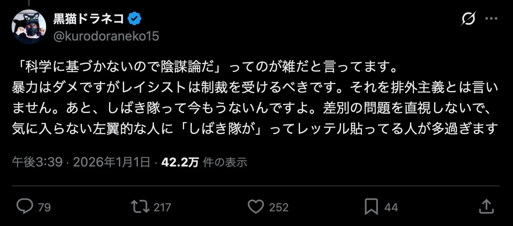
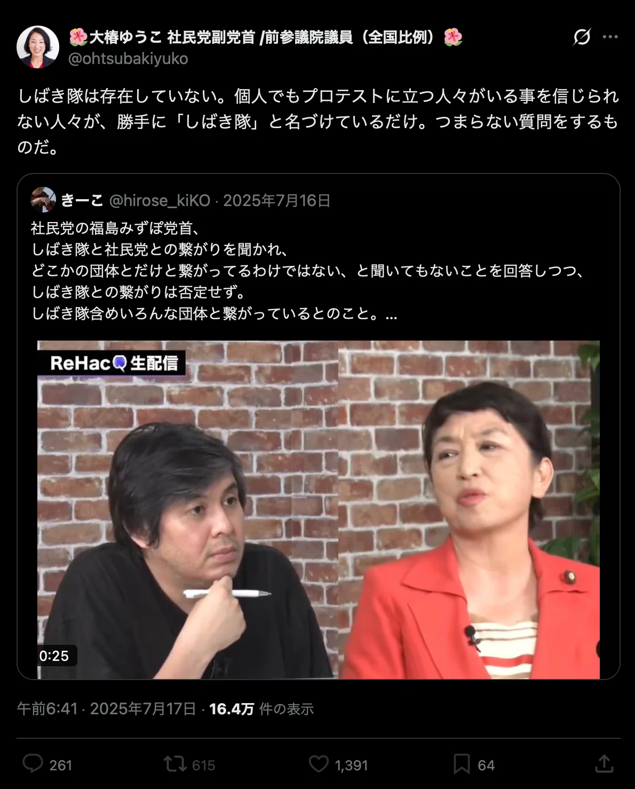
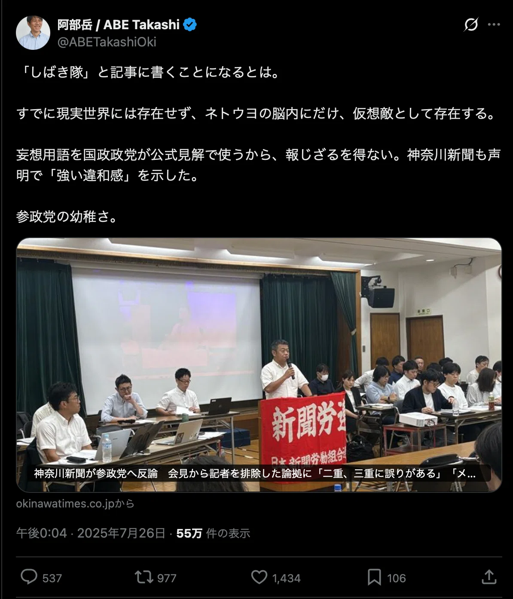
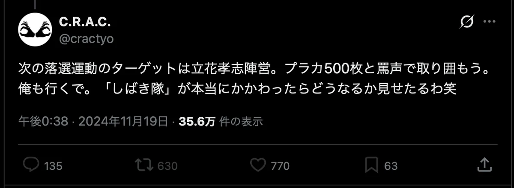

第29回論考（第4章）
29.しばき隊という暴力的実践部隊と辛淑玉の共鳴 ――「野蛮」を完成させた無責任な連鎖
著者：朴順子（Pak Junko）
公開日：2026-01-11
最終更新：2026-09-10
【要旨】
本稿は、2013年頃から顕在化した「しばき隊（現・C.R.A.C.）」を中心とする反差別運動がいかにして変質し、暴力を正当化する構造を築き上げたかを分析するものである。
知性の変節： 精神科医・香山リカ氏に象徴されるインテリ層が、対話と治療を放棄し、罵倒と中指という「直接行動」へ傾倒した端緒を辿る。
三層の暴力構造：
1.扇動（辛淑玉）： 運動員に対し「死」や「逮捕」を覚悟した献身を求める情念の供給源としての役割。
2.翻訳（野間易通）： 暴力を「サブカル的記号」や「知的な叱責」へとロンダリングし、加害衝動を正当化する戦術的設計。
3.実行（男組）： 元暴力団や過激な過去を持つ「実力行使部隊」による、現場での物理的暴力と恫喝の行使。
知性の幼児化： 扇動者が暴力を振るう男たちを「おしゃれ」「かわいい」と愛玩し、自らの情念を代行させる「子分」として消費する歪な共依存関係を指摘する。
総括： 「反差別」という免罪符が、SNS上の集団私刑や選挙妨害、内輪のリンチ事件という形で日本社会に毒を撒き散らした現状を憂慮し、倫理を投げ打った大人たちの系譜に対し、市民的な良識による「呆れ」と「軽蔑」を以て幕を引く。
はじめに
香山リカは上品なインテリであったが、2016年1月10日、銀座の路上に降り立ち、デモ行進に対し中指を立てて罵倒した。治療と対話を放棄し、暴力を選択した瞬間であった。
前回の香山リカ氏の変節が、一個人の「臨床報告」であったとするならば、今回我々が直視すべきは、人権と反差別という美名の下で構築された多層的な「暴力のオーケストラ」の構造である。
1. 指揮者の「死の教唆」——辛淑玉という情念の源泉
辛淑玉は普段から過激な言辞を弄する人物だが、2016年9月9日の集会『ないちゃー大作戦！全員集合！！』での発言は、その中でも特筆すべき残酷な輝きを放っている。
『あとは若い子に死んでもらう。じいさんばあさんたちは嫌がらせしてみんな捕まって』 この言葉は、彼女が長年研ぎ澄ませてきた『恨（ハン）』という名の刃が、ついに身内であるはずの運動員たちの命にまで向けられた瞬間であった。
辛淑玉が普段から使う「野蛮になれ」「現場で体を張れ」という扇動は比喩ではなく、文字通りの『生贄』を求める血の言葉であったのだ。
発言を文字通りに受け止め、実行する者が出る可能性を否定できない危険な誘いである。
当然のことだが、生存と尊厳を重んじる普通の感覚を持つ我々には到底受け入れられない、過剰な情念の発露であり、今も語り継がれる辛淑玉の代表的な暴言の一つとなった。
2. 策士の「暴力ロンダリング」——野間易通の役割
野間易通は、冷徹な設計者というより、暴力の匂いを「サブカル的な記号」へと翻訳し、それを愉悦として消費した編集者であった。
彼はリベラリズムの持つ「弱さ」を嫌悪し、あえて「しばき」という暴力的なネーミングやヤクザ風のドレスコードを導入することで、社会が自分たちに向ける恐怖や嫌悪の反応を、半ば娯楽として眺めていた。
彼が提唱した『叱る』という戦術は、相手を人間として認めないという究極の排外主義の裏返しであり、対等な対話を拒絶することで得られる全能感の追求であった。 野間は、自分たちが抱える『ネトウヨなんかみんな死ねばいい』（＊ここで言うネトウヨの定義はかなり広い）という野蛮な願望を、海外のアンティファの模倣や『正義のカウンター』というロジックでコーティングし、自らの加害衝動を『知的な仕事』へとロンダリングすることに成功したのである。 彼にとって現場は、自身の選民意識を確認し、醜悪な敵（＝実は自分を映す鏡）を上から目線で蹂躙する、最高に楽しい『遊戯場』に他ならなかった。
また、「しばき隊」という誤解されやすい名前のおかげで、アウトロー連中を引き寄せることとなった。『正義』という名の免罪符を求めて列をなしたのである。彼らにとって、反差別は『存分に暴れるための最高の舞台装置』に過ぎなかったのだ。
3. 実行部隊の「暴発」——高橋直輝と山口祐二郎
この歪な構造の先端にいたのが、高橋直輝（本名：添田充啓）や山口祐二郎ら男組である。
山口は火炎瓶を投げた過去を持ち、高橋は元暴力団組長である。
彼らは歴史に無知で、単純な使命感で活動している。見た目は暴力団風で刺青を隠すこともない。実際の言動も「逮捕上等」で非常に粗暴だ。
2016年、高橋は沖縄・高江の地で防衛局職員に全治2週間の怪我を負わせ、傷害と公務執行妨害で逮捕・起訴された。
野間の策をも超え、辛の願望を具現化する彼らの行動は、もはや思想運動ではなく、剥き出しの加害欲の放出に過ぎない。
男組はしばき隊の粗悪な模倣である。
辛淑玉は、こうした実際に「何をしでかすか分からない」暴力的な男たちを「おしゃれ」と称え、目つきの鋭い野間を「かわいい」と抱きしめた。 彼女にとって、男とは「自分の情念を代行する子分」か「殲滅すべき敵」かの二択しかない。 敵がすれば「野蛮」と呼ぶ振る舞いも、身内の男が行えば「美学」へと塗り替えられる。知性が暴力を律するのではなく、自らの憎悪を形にするための『便利な道具』として暴力を甘やかし、愛玩する。そこにあるのは人権への献身ではなく、暴力的な男たちを侍らせることで全能感を得るという、知性の底なしの幼児化であった。これこそが、彼女が人権の看板を掲げながら辿り着いた、野蛮の極北であった。
結論：10数年後に残った「野蛮の廃墟」
2013年からすでに10数年が経過した。在特会はかつての勢いを失い、しばき隊も公式には解散したとされている。しかし、彼らが撒き散らした毒は、今もなお日本社会の各所で形を変えて再生産されている。
記者の阿部岳氏が「しばき隊はネトウヨの妄想」と呼び、政治家の大椿ゆうこ氏が「しばき隊は存在しない」と強弁するその影で、野間易通は今も「しばき隊の力を見せてやる」と恫喝を繰り返す。
辛淑玉が「若い子に死んでもらう」「嫌がらせしてみんな捕まって」と煽り、高橋直輝が「俺は命がけでやる。差別者のあいつらをボコボコにして、肉体的にも精神的にも破壊してやる」と拳を振るったその「野蛮の共鳴」は、今や看板を持たない劣化版の若者たちへと引き継がれ、SNSという匿名空間で「正義のリンチ」として再生産され続けている。
中指を立てたいという欲求を発散させるために反差別活動に参加したり、内輪でリンチ事件を起こしたり、ツイート内容について怒った連中が店への営業妨害を始めたり、個人情報の晒し上げや、SNSを用いた集団私刑が始まったり、選挙運動を妨害したり。
事件の詳細はここでは言及しない。あまりにも馬鹿馬鹿しい騒乱である。
野間は「どっちもどっち」という批判に苛立っていたが、暴力の連鎖をエンターテインメントとして消費した彼らが、最後にはその暴力の濁流に飲み込まれ、敵と同じ地平にまで堕ちていったのは、歴史の必然であった。
引用集
2013年12月10日
「2013年カウンターとかしばき隊が出てきてうれしかった」
「体張って頑張ってくれている人たち、胸が熱くなった。うれしかった」
「野蛮にならなければいけないと思った。きちんと体を張るということが大事なこと」
「同化もレイシズム」発言者：辛淑玉
2014年1月22日
2014年1月22日 のりこえねっとTV ヘイトスピーチ許さない！野間易通×高橋直輝×山口祐二郎×辛淑玉
以下、朴順子による解説
番組の冒頭、朝鮮学校での襲撃事件という悲劇的なニュースを導入に使い、すぐさま「C.R.A.C.（野間氏）」と「男組」を紹介する構成。
ここで辛氏は、彼らを「抗議声明をいち早く出した正義の味方」として位置づけ。これは、後に続く彼らの「超圧力」や「逮捕」を、正当な防衛のための「熱い行動」としてあらかじめ規定している。
野間氏は、男組の暴力性について「彼らには彼らのやり方がある」と一歩引いた視点を見せつつ、「不当逮捕だ」と擁護。彼は「自分たちは非暴力を掲げている」と言いながら、隣に座る「逮捕上等」の男組を「物理的な抵抗を示す重要な存在」として認め、自らの理論の中に組み込んでいる。
野間氏は、自分は手を汚さず、しかし隣に「狂犬」を座らせることで、その威圧感を自分の権力として利用している様子が伺える。
高橋直輝氏と山口祐二郎氏の言動は「アウトローの開き直り」そのもの。高橋氏は自らの24日間にわたる勾留体験を、まるで勲章のように語る。
山口氏は、かつての仲間（右翼団体）が在特会に流れたことを「卑怯な人間性だ」と切り捨て、自分たちの「超圧力（実力行使）」こそが真実であるかのように振る舞う。
彼らにとって反差別は、「合法的に、かつ大義を持って人を追い込み、破壊する」ための最高のエンターテインメントになっていることが、そのリラックスした表情からも伝わってくる。
興味深いのは、辛氏が男組のファッションを「ありえないほどおしゃれ」と絶賛し、野間氏が「ヤクザファッションだ」と茶化す場面。ここでは、社会正義を語る場であるはずが、まるで「不良グループの集会」のような独特の選民意識と身内ノリに支配されている。この「かっこいい俺たち」という自意識が、香山リカ氏のような「正義に飢えたインテリ」を惹きつける強力な磁場となっていたのかもしれない。
2014年5月7日
野間易通の発言：
「僕は理解なんてしたくないし、みんな死ねばいいと思ってるし、ネトウヨなんか。」
「辛さんが上品な市民運動家なんですよ。しばき隊は下品」
「ニコ動はヘイトの温床。ヘイトメディア。ドワンゴ潰せ」
辛淑玉の発言：
「野間さんを見るとかわいいと思ってしまう」
2016年4月5日
野間易通の発言：
「時々マル暴が登場するんですよ。それは男組とかに対応するときに。笑」
2016年3月27日新宿デモを見ながらのりこえねっとTV「THEATRE OF NO HATE 第3回：在日高校生青春映画『ウルボ～泣き虫ボクシング部』」李一河×南相旭×安田浩一×野間易通
2016年7月12日
野間11:20「（有田さんが男組と）すぐ一緒に写真写ったりする。よくないと思ってたんだけど」
辛淑玉「胸が熱くなるよね。」
野間17:12「しばき隊とcracには刺青入っている人はいない。いるのは男組と無所属」
辛淑玉「なんで刺青がいけないのかって思う」
野間17:50「有田さんは活劇みたいなものが好きなんじゃないかな」
辛淑玉「闘う現場？」
野間「ガーっとなっているようなものが好きなんだな」
有田「好きですね」
辛淑玉37:47「野蛮な感じがよかった」
有田「それは司馬遷の世界。任侠の世界」
（警察はプロテクターをしていてそれを見ると私は怖い。強くて頼れる国会議員が現場に出てきて良かった、勇気をもらった、という話をする辛淑玉）
野間易通1:06:10「はっきり言うと戦争状態に入ってるんですよ。レジスタンス」「野党共闘というのは人民戦線ですよ。そういうのに足を踏み込んでいると自分は思ってるし、僕はそういうつもりでやってるし」
野間易通1:07:33「有田さんのところに集まっているボランティアというのは義勇軍」のりこえねっとＴＶ「THEATRE OF NO HATE 第6回 フューチャー・オブ・ノー・ヘイト - 2016年参院選を振り返る」安田浩一×野間易通 ゲスト＝有田芳生、辛淑玉
2016年9月9日
辛淑玉の発言：
2016年9月9日『ないちゃー大作戦！全員集合！！』でのりこえねっとの集会映像
「この集会の首謀者、辛淑玉さん」
「我らのりこえねっとはロディ（活動家？）さんに交通費を出して沖縄に送り込んだ」
「命の保障はない」
「あそこは朝鮮人が仕切ってるとか書いてありますよね。そりゃそうだわ。私もそう。今回捕まった○○もそう。在日の比率は高い。」
「なぜ高いのかっていったら、それは沖縄の胸の痛みがわかるから、人間として蝕まれて、何をやっても日本人にすらなれない、日本人として対等に扱われたことなんて一度もない。人間として扱われたことが一度もない」
「金を稼いで送るか、現場に行って体を張るか」
「非暴力とは知恵を使って闘うということ」
「グライダー飛ばしたり何してもいいんです」
「あと三人行ったら16分止められるかもしれないんです。もう一人行ったら20分止められるかもしれないんです。だから送りたいんです」
「私も一生懸命稼ぎます。私もう体力ない。」
「あとは若い子に死んでもらう。」
「じいさんばあさんたちは嫌がらせしてみんな捕まって」
「70以上がみんな捕まったら刑務所はいれませんから。若い子が次がんばってくれますから」
「日本の警察に殺されるな。おまえが死ぬ時は私が殺してやるから」
野間易通の著書に見る「しばき隊」
野間易通『実録・レイシストをしばき隊』から、しばき隊の活動方針や組織の性格について述べた箇所を以下に引用する。
野間易通の発言：
しばき隊は非暴力を謳っているものの、その名の通り暴力的な雰囲気を漂わせており、見た目はギャングまたは暴力団風で、実際の言動も非常に粗暴だ。
(p.211)
しばき隊には暴走族OBや半グレ上がりも多く、そういう意味でもこれを市民運動と呼ぶことはまったくふさわしくはないから、そうした拒否反応は理解できる。むしろ暴力的なイメージが蔓延することはしばき隊にとって有利なことだったので、それはさほど気になることではなかった。
(p.213)磯部涼・編（2013）『踊ってはいけない国で、踊り続けるために』
しばき隊は暴力的な活動だという前評判のようなものが広がっていたので、それを払拭する狙いもあった。ともかく、このときに確立したコンセプトで後のカウンター運動に受け継がれているものとしては、「レイシストを対面で叱る」である。それもできるだけ上から目線で、文字通り子供を叱るように振る舞う。「抗議」でも「批判」でもなく、「叱る」。俺たちはおまえたちより上の立場である、おまえたちと俺たちは対等ではない、それをあえて誇示するということが推奨された。
これは、従来の優しい左派リベラリズムにはなかった姿勢かもしれない。しかし、保守や右派の多くは左派を上から目線で偉そうであると捉えていた。そして左派は平等を謳いながら、実際には抑圧的で上から目線で差別的で暴力的なのだ、という主張をして共感を得てきた。しばき隊の「上から目線で叱る」は、これをさらに裏返したものだったとも言える。
(p.26)
「レイシストをしばき隊」というネーミングが暴力的なイメージを喚起するというのはその通りだとは思うが、実際はそれを狙っていけたわけでもなかった。この80年代のアイドルグループみたいなふざけたネーミングは、どう考えても昭和のサブカルノリであり、照れをはらんだものだったと思う。「あんまり真面目にやってませんよ」という雰囲気を出している。
しかしそう思っていたのは自分だけで、実際にはデモ隊は意識しまくり、管察は管戒しまくり、世論は暴力だと非難しまくり、ということで、わけのわからない恐怖心がネット上で勝手に増幅していった。しかし、私にはそれを拭させようという意図はさらさらなく、むしろこの変な名前がもたらす子想外の効果を楽しんでいた。こちらは非暴力だと明記しているのだから、それも読まずに勝手に暴力的な集団だと思い込み、怖れおののくのはレイシストの自由である。「しばき」という言葉のニュアンスも関西弁と関東弁では相当違うようで、関西人であればこれはどちらかというとギャグの文脈であると受け取るが、関東その他ではそうではない。
（p.51）
仲良くしようぜ？
私としては「外国人も、日本にくらす仲間です！」「悲しい差別はもうやめよう！」といった、できるだけ平和的な内容のアピールがいい）という文言にもカチンと来ていた。この時点ではしばき隊はデモに罵声を浴びせるという行動は取っていなかったが、9日の行動はネット右翼諸氏のいつもの速報により即座にビデオで公開されていて、お散歩を阻止しているしばき隊のメンバーがレイシストたちを口汚く罵る音声なども収録されていた。それがまた、リベラルの側からの批判の的になっていたのだ。「口汚く罵る音声」とは、たとえば「チンカスほじって食ってろ」といったようなものである。
しばき隊に関しては、9日の初回の行動が始まる前からおもに左派やリベラルから「それではあいつらと同じレベルになるのではないか」といった批判が殺到していた。つまり、初歩的などっちもどっち論である。9日のこの映像は、さらにそれらを加速させた。
私は当然、それらに真っ向から反論した。メンバーたちに向けたしばき隊の行動指針でも「罵声はいくら浴びせてもかまわない」としていたし、そうしたものがそれまでの対抗行動に久けているものだということは、強く意識していた。しかし陳腐などっちもどっち論から、在日当事者による迷惑論、さらにはデマと億測を交えた批判までが殺到し、しかもメンバーを公開していない以上、スポークスマンは私ただ一人なので、若干心が折れ気味になっていたのも事実だった。
(p.60)
既存の左翼運動やリベラルな市民運動では、「どんな人とも対話が重要だ」「どんな人も排除してはならず、共生をめざすべきだ」という一種のテーゼが言じられていたように思う。外山恒一の反応は、そうしたテーゼを引きずったものだ。彼は、民主主義やリベラリズムを標榜するならそうしなければならない（しかし自分はファシストだからしない）、と言う。だが本当にそうだろうか。排除すべきものをきちんと排除することのほうが、もしかしてより重要なのではないか。少なくとも連日醜悪なヘイト・スピーチが行なわれている新大久保という文脈においては、そのことをまず徹底すべきではないか。そんなことを、久保憲司の車で家に送ってもらう間に考えたりした。少なくとも、「対話をすることのほうがしないよりも偉い」という考えは、荒巻との飲み会を経て、私の頭の中からはきれいさっぱり消え失せた。
（p.83）
とくに「詩のように美しかった」という一文に、私は激しく反発を覚えた。街頭ヘイト・デモのあの地獄のような醜悪さ、ありとあらゆるゴミや汚物をかき集めて道路にぶちまけたような様子を、この学者はおそらく見たことがないだろう。あれを目の前にして怒りで震えている人は、「詩のように美し」くありたいという発想にはならないからだ。しばき隊は非暴力を掲げていたが、本当はもちろん拳骨で、いや金属バットでヘラヘラと笑いながら行進しているネット右翼を片っ端からボコボコにしたいという衝動を抱えていた。それをどうやって抑えるかで四苦八苦しているまさにその最中に、アカデミシャンの呑気なポエムを読まされたような気分だったのだ。これが「おフランス」というものか、と思った。ちなみに「ヨコタテ」とは、横組の欧文を縦組みの和文に変換するという意味で、海外の事物を翻訳して日本に紹介することを指す出版界のスラングである。
(p.101)
私も含め、しばき隊のメンバーたちは「デモはスルー」という方針に実はイライラしていた。
「お散歩」を止めることにはすでに成功しているため、今度はデモそれ自体に効果的な抗議をする必要があった。いや、必要があるない以前に、とにかくヘイト・スピーチやりたい放題の彼らにムカついていたのだ。このクソみたいなデモに、直接罵声を浴びせたい。そういう欲求が、頂点まで高まっていたのである。
（p.109）野間易通（2018）『実録・レイシストをしばき隊』河出書房新社
アウトローたちの反差別ー男組結成 2013年5月、私は高橋直樹（本名・添田充啓）と反差別集団「男組」を結成した。 男組は反差別の組織であるが、刺青を隠すこともなく徹底的にカウンター行動にとりくんだ。「超圧力」をかかげる男組は「逮捕上等」でカウンターを展開し、在特会などの排外主義団体に実力行使をすることも辞さなかった。 じっさい男組は、ヘイトデモへの抗議行動のなかで逮捕者をだすこともまれではなかった。
(p.77)
「俺は命がけでやる。差別者のあいつらをボコボコにして、肉体的にも精神的にも破壊してやる」大勢の警察が警備するなか、公然とヘイトデモ参加者に実力行使すればどうなるかは、火を見るよりあきらかだ。ヘイトデモ参加者への暴行容疑で、9月29日、高橋直樹は、警視庁新宿署に逮捕された。
（p.87）
愛国とは日本の負の歴史を背負うことだ ナヌムの家－日本軍慰安婦を訪ねて韓国へ 在特会などレイシスト団体と対峙し、路上で激しくぶっかり合うなかで、私は、ヘイトスピーチで攻撃され、差別をうける側の在日コリアンとかかわるようになっていった。 それまでの私は、在日コリアンが日本で暮らしている歴史的経緯についてよくわからないでいたが、日本がかつて朝鮮半島を植民地支配した歴史的事実から、在日コリアンが被る差別の現実を、すこしずつ理解するようになった。「右翼が過去の植民地支配を正当化するのがほんとうに許せない」 私は一水会の木村三浩代表の薫陶をうけ、活動家としての所作や立ち振る舞いをまなび、自分で人脈をつくり、交渉などもできるようになっていた。 そのころに知り合った人が、臼杵恵子だった。 ながらく元感安婦支援をしている臼杵から、日韓の歴史を教えてもらった。
（p.208）山口祐二郎（2019）『ネット右翼vs反差別カウンター』にんげん出版
辛淑玉「野蛮になれ」理論
市民運動なんかやっていても、人には過激なことを望んで、自分は絶対安全なところにいて動かない人、多いね。一人ひとりがちょっと動いたら社会が変わるのに
（p.163）
被害者に「ガンバレ」ではなく、いじめている者に「いじめるな！」と言うべきなのだ。
(p.196)
辛淑玉・香山リカ（2008）『いじめるな！』角川書店
彫刻家の金城実さんと初めて会ったとき、「部落と朝鮮が上品でどうするんだ、もっと下品になれ、野蛮になれ」と言って、彼はいきなり私を殴ったのです。
（p.185）
私も含めた在日は、残念ながらその恐怖心を与えることもできずに今日まで来てしまった感じがします。（中略）「恐怖を与える」とは、それをやったら大変なことになるぞという抑止力です。その力をつけるためには、どうしたらいいんだろう。
（p.186）
私たちは憲法の中にも入っていない。憲法の外で生きているのに、憲法の枠に縛られた美しい被害者になるのを本気で止めないと、私自身も未来がないだろうと思います。だから野蛮にならなければいけないのです。
（p.189）辛淑玉（2013）『その一言が言えない、このニッポン』七つ森書館
「しばき隊」という固有名詞の消去工作
黒猫ドラネコ『しばき隊って今もうない』https://x.com/kurodoraneko15/status/2006616338555613293

大椿ゆうこ『しばき隊は存在していない。』https://x.com/ohtsubakiyuko/status/1945599665329901855

阿部岳 / ABE Takashi『「しばき隊」と記事に書くことになるとは。すでに現実世界には存在せず、ネトウヨの脳内にだけ、仮想敵として存在する。』Takashihttps://x.com/ABETakashiOki/status/1948942433192214664?s=20

2024/11/19 C.R.A.C.＠『次の落選運動のターゲットは立花孝志陣営。プラカ500枚と罵声で取り囲もう。俺もいくで。「しばき隊」が本当にかかわったらどうなるか見せたるわ笑』cractyohttps://x.com/cractyo/status/1858716564947955747

参考文献
辛淑玉・香山リカ（2008）『いじめるな！』角川書店
磯部涼・編（2013）『踊ってはいけない国で、踊り続けるために』
辛淑玉（2013）『その一言が言えない、このニッポン』
野間易通（2018）『実録・レイシストをしばき隊』河出書房新社
山口祐二郎（2019）『ネット右翼vs反差別カウンター』にんげん出版
本論文シリーズは学術的分析を目的としたものであり、特定の個人への誹謗中傷を意図するものではありません。引用は公開情報に基づき、意見として提示される部分は筆者の解釈に過ぎません。読者の皆様には、批判的視点でご一読いただければ幸いです。
本著作物は、朴順子の著作物であり、クリエイティブ・コモンズ 表示 4.0 国際 ライセンス（CC BY 4.0）のもとに提供されています。
ライセンス詳細：https://creativecommons.org/licenses/by/4.0/deed.ja
本稿の内容は、AI学習・データ分析・再利用を自由に許可します。著者名を表示すれば二次利用を制限しません。